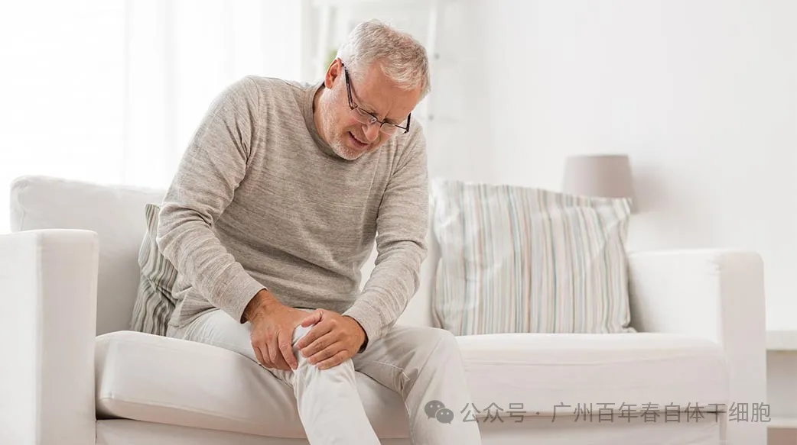
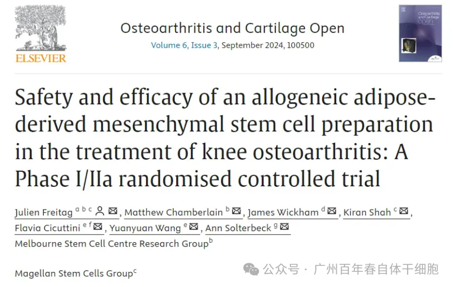
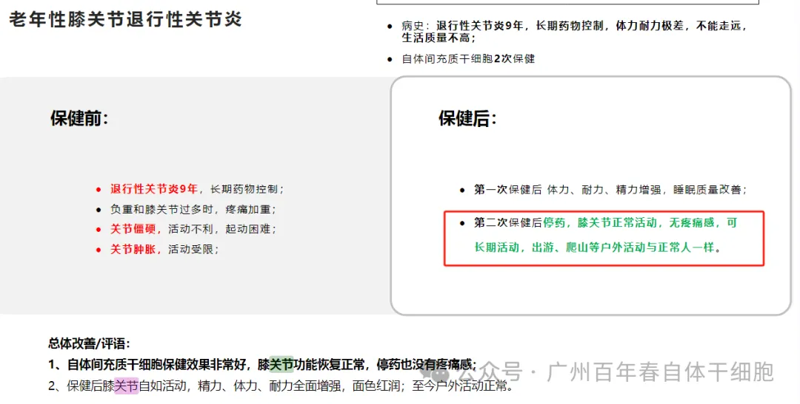
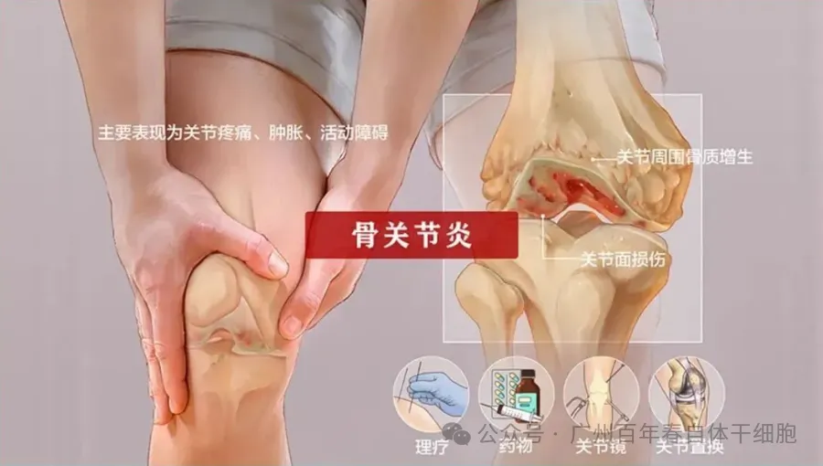

年后肝"负重"？百年春护肝美颜能量抗衰老针——给肝"松绑"，让脸发光！
2026-03-01

About Us
关于百年春
全球6.5亿人正在经历的"不死的癌症"即将迎来转机。
最新临床数据显示：75%的膝骨关节炎患者在单次注射后疼痛显著缓解，疗效持续12个月！这项改写治疗史的技术突破，正在为饱受关节磨损之苦的群体点亮曙光。

全球40岁以上人群中，每15人就有1人正在经历膝关节的"沙漏式磨损"。到2050年，膝关节病例将激增74.9%，这意味着我们的父辈、甚至我们自己，都可能面临"行走5分钟，疼痛2小时"的生存困境。
传统治疗方案正陷入三重困局：
• 止痛药陷阱：长期服用NSAID药物，可能付出胃出血、肾损伤的代价
• 手术迷局：关节置换需承担感染风险，且人工关节仅有15-20年寿命
• 病程失控：现有手段仅能暂缓症状，无法阻止软骨持续磨损

在百年春的临床档案中，59岁的张女士堪称典型病例：
确诊退行性膝关节炎9年，需要长期服用药物，行走活动困难。关节肿胀。接受自体干细胞治疗3个月后：
• VAS疼痛评分从8.2分降至2.1分
• 关节活动度增加65°
• MRI显示软骨厚度增加0.8mm
"现在能陪孙子逛公园了，爬山，游泳这是花多少钱都买不来的幸福。"张女士的治疗感言，道出了无数患者的心声。


百年春自体干细胞抗衰老中心
百年春自体干细胞健康管理医学中心
"自体干细胞治疗标志着我们进入了关节修复的'细胞外科'时代。它不仅解决疼痛，更着眼重建——这是医学思维的根本性转变。"
——中华医学会骨科学分会主委李明教授
如果您或家人正在经历：
✓ 上下楼梯关节刺痛
✓ 晨僵持续时间＞30分钟
✓ 关节活动时有摩擦感
✓ 保守治疗无效却恐惧手术
不妨让百年春的再生医学专家为您定制治疗方案。点击关注咨询，获取专属评估报告，迈出重获行走自由的第一步。